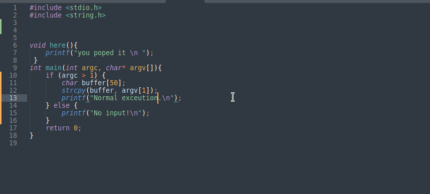
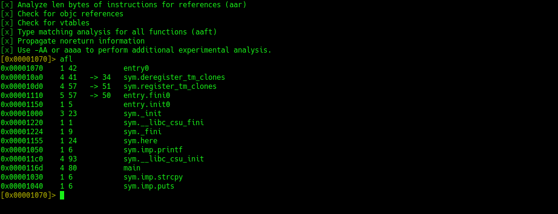

Guide to smashing stacks like a pro
what’s up, pookies? Naty back again, and today, we’re about to break into some serious hacker shit, Buffer Overflows. That’s right if you wanna learn how to mess with memory, crash programs, or even take control of a system, you gotta understand how to smash buffers like you smash... well, you get it. So, let’s start.
What the Hell is a Buffer Overflow?
Alright, let me break it down for you, a buffer is just a chunk of memory. Think of it like a box where you store your junk. A buffer overflow happens when you put too much data into that box, so much that it spills out and messes with the other junk nearby. In our world, that "junk" is code or memory addresses things we can mess with if we play it right
Picture this: you’ve got a stack, right? Memory is arranged properly. But if you overflow it with too much data, it spills over onto the next one, and you can smash the stack. The goal? Overwrite the return address to hijack the flow of the program and make it do what you want.
Step 1: The bad c code
What’s going on here?
strcpy(buffer, argv[1]); This is our weak link, It takes an input string, and dumps it into a buffer without checking the size. The strcpy is dumb as hell it doesn’t care if your input is too big for the buffer. That’s where we strike.
here() This is what we wanna run, but the program doesn’t call it directly. We’re gonna make it happen by overflowing the buffe
So, how do we exploit this? were gonna stuff the buffer with more data than it can handle. The goal is to overwrite the return address of the function. That way, when the program tries to return it jumps to our desired location.
1, Fill the buffer with junk data
2, Overwrite the return address with the address of here()
3, Find the Offset
4, Find the Address
5, Overwrite the Return Address
Compile your C code with disabled stack protection (yeah, we’re cheating a little, but we’re here to learn) and Makes the stack executable (-z execstack) . Now take long input and pass it to the program
$python -c 'print "A" * 71' | ./test
Segmentation fault
This will result in seg fault because input is too big for the buffer
address of here()
The 0x00001155 address we convert it into little-endian format like this 'U\x11\x00\x00\x00\x00\x00\x00' its just reversed and added lettle null bytes
$python -c 'print "A" * 71 + "U\x11\x00\x00\x00\x00\x00\x00"' | ./test
you poped it
The program jumped to here(). You’ve officially smashed the stack!
Real world protection
Look pookie, this is fun and all, but don’t think real systems are just gonna let you wlak in and smash their stacks. There’s a ton of stuff out there to stop this from working
ASLR: Randomizes the memory addresses to make it harder for you to find the return address.
DEP: Stops you from executing code in non-executable regions of memory.
Stack Canaries: Adds special values before the return address that, if changed, cause the program to crash
Wrap It Up,
That's it You've just taken your first step into the world of buffer overflows. Sure, we didn't go full pro with advanced exploit techniquos like ROP or bypassing ASLR, but you gotta crawl before you can walk Now go out there, mess with some vulnerable programs, and remember: don’t get caught. You do not want the feds knocking on your door just because you got a little too into this.